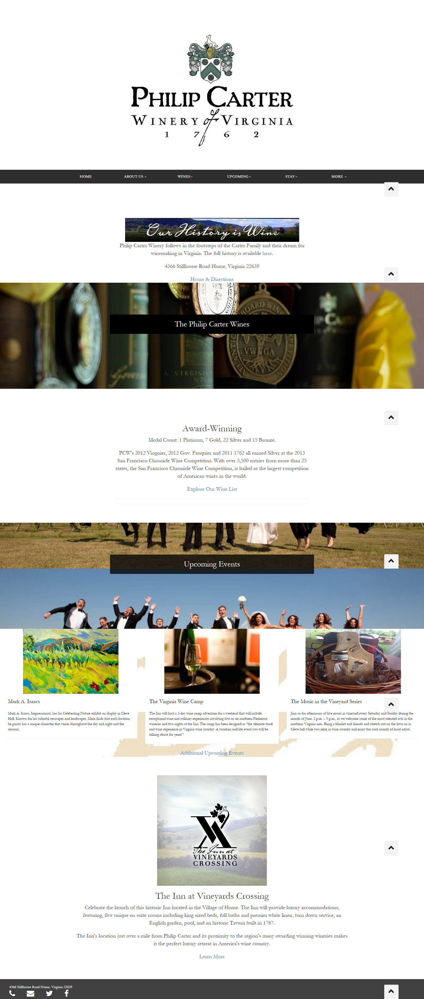

Philip Carter Winery Redesign
Philip Carter Winery is one of the oldest wineries in America, dating back to the 17th Century. Their website struggled from clutter -- it simply had too much information to showcase. The messy website isn't at all indicative of the incredible wines they serve. I created a polished landing page for them and offered to build out the rest of their site.
Before
After
Shanaz F. Chowdhery!